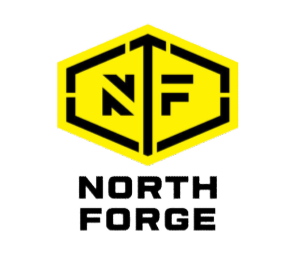

Unlock Visibility of Your Critical Infrastructure
Learn how you can remove the stress and risk from operating your critical environment and streamline your operations with Polysense
Eliminate downtime
Maximize Asset Utilization
Streamline Compliance
Why PolySense?
Effortless Monitoring,
Anytime, Anywhere.
Manage your critical infrastructure from any place, at any time. Our intuitive software offers peace of mind, keeping you informed and stress-free.
Automatic Reporting
Eliminate paper records and time consuming manual checks. Our wireless sensors take a measurement every few seconds and display on dashboard or report.

Eliminate Waste
The PolySense Solutions Platform will shine a spotlight on where waste is occurring. Data from deployed sensors are displayed on easy to read dashboards and reports so that you can take action.

Enhanced Security
We have several clients who are ITAR, AS9100, NADCAP, ISO13485 certified that are utilizing our platform. Our platform is extremely effective, yet non-invasive. Equipment cannot be controlled or compromised by our sensors.
Text & Email Alerts
Take Action Sooner! Immediately know when asset is predicted to stop, stops, power loss occurs, or temperature/humidity is out of range.

Scalable
Monitoring more assets doesn’t get any easier than this. Our wireless sensors take only minutes to deploy.
Trusted Across North America
Our clients span coast to coast, from Canada to the United States, demonstrating our reliable and wide-reaching solutions. Join the many businesses that trust PolySense Solutions for comprehensive, real-time monitoring and management.
Our Clients
and Partners



Sensor Installs in
Minutes
Installs in five minutes on average and typically does not
require machine to shut down.
Wireless range
Battery life
Receive critical alerts Immediately
Enjoy peace of mind as our innovative platform keeps you well-informed with instant alerts, alerting you to critical events such as power outages, equipment failures, temperature extremes, and more - empowering you to stay ahead and in control.
Ultimate
Visibility of Operations
Asset Management
At a Glance
Reduce Downtime
Analyze usage trends to understand where downtime occurs, empowering you to take proactive measures to minimize it.
Minimize Electrical Waste
Precisely track and understand energy consumption to find areas of waste, making your operations more cost-effective.
Enhance Safety and Efficiency
Know who is trained to operate assets, ensuring only qualified individuals have access.
Simplify Document Access
Retrieve all associated documents, manuals, and warranties with a click, streamlining information retrieval.
Facilitate Maintenance and Planning
Quickly locate assets in large facilities or campuses, enabling efficient maintenance and strategic planning.
Control Asset Information
Manage vital details like serial numbers, purchase prices, and more, allowing for informed asset life cycle management.
A Quick
Overview of Us